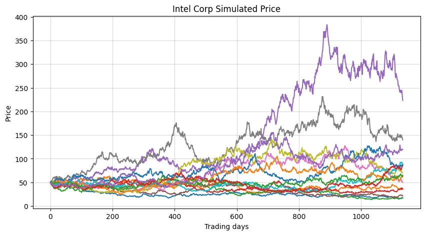
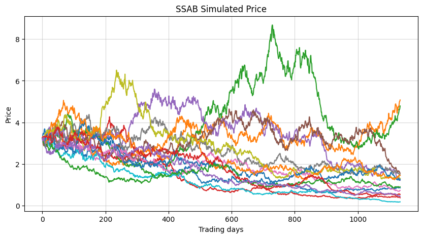

Stock prediction
Python
Project Overview
This project stands out from my other portfolio pieces because it wasn't created in my free time( it comes from one of the courses I completed during my master studies). The task description:
I had to imagine, I received a $1000 gift on January 1st, 2021.(what a gift) The goal was to invest half of the amount in Intel (INTC) and the other half in SSAB-A (SSAB-A.ST), using fractional shares so the full amount could be invested on the first trading day of 2021. As a rational investor, the next step was to build a data-driven forecast estimating the value of this investment by the end of June 2025 (roughly four and a half years later).
I had to imagine, I received a $1000 gift on January 1st, 2021.(what a gift) The goal was to invest half of the amount in Intel (INTC) and the other half in SSAB-A (SSAB-A.ST), using fractional shares so the full amount could be invested on the first trading day of 2021. As a rational investor, the next step was to build a data-driven forecast estimating the value of this investment by the end of June 2025 (roughly four and a half years later).
Project Questions
- Extract historical data on the stocks of your interest INTC, and SSAB-A.ST
- Compute the mean daily log-return of the share prices from their daily closing prices. The daily log-return is defined as Rt = log( Xt / Xt-1 ), where Xt is the closing price on day t.
- Assume that daily log-returns follow a normal distribution with constant mean μ and variance &sigma2, i.e. Rt ~ N(μ, σ2). Estimate μ and σ2 from historical data, then simulate price paths for both stocks over the next 4.5 years starting from the first trading day of 2021, assuming 252 trading days per year.
- Based on a large number of simulated trajectories (in task 3), do you find your investment profitable? How much profit/loss do you expect? Compare your simulation results with the actual result.
Task 1
First I needed to extract historical data of INTC and SSAB-A.
import yfinance as yf,pandas as pd,numpy as np
import seaborn as sns, matplotlib.pyplot as plt
#added auto_adjust=True to get raw close prices + multiply by 0,11 SEK->USD
intel = yf.download("INTC", start="2018-01-01", end="2020-12-31", auto_adjust=False, progress=False )
ssab = yf.download("SSAB-A.ST", start="2018-01-01", end="2020-12-31", auto_adjust=False, progress=False)*0.11
#actual data of range 2021-2025
actual_intel = yf.download("INTC", start="2021-01-01", end="2025-06-30", auto_adjust=False,progress=False)
actual_ssab = yf.download("SSAB-A.ST", start="2021-01-01", end="2025-06-30", auto_adjust=False,progress=False)*0.11
print(intel.head(2),"\n")
print(ssab.head(2))
Price Adj Close Close High Low Open Volume
Ticker INTC INTC INTC INTC INTC INTC
Date
2018-01-02 39.330383 46.849998 46.900002 46.209999 46.380001 23370800
2018-01-03 37.995579 45.259998 46.209999 43.650002 45.470001 116479000
Price Adj Close Close High Low Open Volume
Ticker SSAB-A.ST SSAB-A.ST SSAB-A.ST SSAB-A.ST SSAB-A.ST SSAB-A.ST
Date
2018-01-02 3.440956 5.0600 5.0600 4.8609 4.939 430992.65
2018-01-03 3.507530 5.1579 5.1964 5.0600 5.071 449212.94
Task 2
In task 2, I derived the mean daily log-return of the share prices from their daily closing prices using the given formula.
intel["LogReturn"] = np.log(intel["Close"] / intel["Close"].shift(1))
ssab["LogReturn"] = np.log(ssab["Close"] / ssab["Close"].shift(1))
intel = intel.dropna()
ssab = ssab.dropna()
mean_intel = intel["LogReturn"].mean()
std_intel = intel["LogReturn"].std()
mean_ssab = ssab["LogReturn"].mean()
std_ssab = ssab["LogReturn"].std()
print(f"Intel: mean = {mean_intel:.6f}, std = {std_intel:.6f}")
print(f"SSAB: mean = {mean_ssab:.6f}, std = {std_ssab:.6f}")
Intel: mean = 0.000053, std = 0.025197
SSAB: mean = -0.000601, std = 0.023583
Task 3
I assumed that daily log-returns follow a normal distribution with constant mean and variance,
i.e. Rt ~ N(μ, σ2). I estimated μ and σ2 from historical data, then simulated "some" price paths for both stocks over the next 4.5 years starting from the first trading day of 2021, assuming 252 trading days/year.
i.e. Rt ~ N(μ, σ2). I estimated μ and σ2 from historical data, then simulated "some" price paths for both stocks over the next 4.5 years starting from the first trading day of 2021, assuming 252 trading days/year.
# simulation params
n_sims = 10000 # 10k simulated scenarios
n_days = int(4.5 * 252)
# starting price, first price in 2021
x0_intel = actual_intel["Close"].iloc[0].item()
x0_ssab = actual_ssab["Close"].iloc[0].item()
#-----INTEL
all_paths_intel = [] #list to store all simulated paths
for sim in range(n_sims): # each loop creates one possible future price path
prices = [x0_intel] # start each time from todays price
#simulate daily price changes, moves forward one day at a time
for day in range(n_days):
# d_change - draws a random daily change out of normal distr in a log-return form
d_change = np.random.normal(mean_intel, std_intel)
new_price = prices[-1] * np.exp(d_change)
prices.append(new_price)
all_paths_intel.append(prices) # store this whole path after n_days
#----SSAB A
all_paths_ssab = []
for sim in range(n_sims):
prices = [x0_ssab]
for day in range(n_days):
d_change = np.random.normal(mean_ssab, std_ssab)
new_price = prices[-1] * np.exp(d_change)
prices.append(new_price)
all_paths_ssab.append(prices)
#converting to np 2D arrays for further calc and transpose flips rows with columns, so days are rows
paths_intel = np.array(all_paths_intel).T
paths_ssab = np.array(all_paths_ssab).T
#plots
plt.figure(figsize=(10,5))
plt.plot(paths_intel[:,:15])
plt.title("Intel Corp Simulated Price")
plt.xlabel("Trading days")
plt.ylabel("Price")
plt.grid(True, alpha=0.5)
plt.show()
plt.figure(figsize=(10,5))
plt.plot(paths_ssab[:,:15])
plt.title("SSAB Simulated Price")
plt.xlabel("Trading days")
plt.ylabel("Price")
plt.grid(True, alpha=0.5)
plt.show()


Task 4
Based on a large number of simulated trajectories (in task 3), is the investment profitable? How much profit/loss do I expect?
First, I compared my simulation results with the actual results (with the real stock process on the last trading day of June in 2025).
First, I compared my simulation results with the actual results (with the real stock process on the last trading day of June in 2025).
actual_intel["LogReturn"] = np.log(actual_intel["Close"] / actual_intel["Close"].shift(1))
actual_ssab["LogReturn"] = np.log(actual_ssab["Close"] / actual_ssab["Close"].shift(1))
#calc mean and standard deviation
mean_actual_intel = actual_intel["LogReturn"].mean()
std_actual_intel = actual_intel["LogReturn"].std(ddof=1)
mean_actual_ssab = actual_ssab["LogReturn"].mean()
std_actual_ssab = actual_ssab["LogReturn"].std(ddof=1)
#6f - with 6 dec places
print(f"Actual Intel: mean = {mean_actual_intel:.6f}, std = {std_actual_intel:.6f}")
print(f"Actual SSAB: mean = {mean_actual_ssab:.6f}, std = {std_actual_ssab:.6f}\n")
#simulated daily log returns
log_returns_intel = np.diff(np.log(paths_intel), axis=0)
log_returns_ssab = np.diff(np.log(paths_ssab), axis=0)
mean_simulated_intel = log_returns_intel.mean()
std_simulated_intel = log_returns_intel.std(ddof=1)
mean_simulated_ssab = log_returns_ssab.mean()
std_simulated_ssab = log_returns_ssab.std(ddof=1)
print(f"Simulated Intel: mean = {mean_simulated_intel:.6f}, std = {std_simulated_intel:.6f}")
print(f"Simulated SSAB: mean = {mean_simulated_ssab:.6f}, std = {std_simulated_ssab:.6f}")
Actual Intel: mean = -0.000696, std = 0.028187
Actual SSAB: mean = 0.000579, std = 0.023181
Simulated Intel: mean = 0.000056, std = 0.025198
Simulated SSAB: mean = -0.000606, std = 0.023590
Finally, I examined the investment.
#----simulated final values
final_intel_sim = np.array([p[-1] for p in all_paths_intel]) #every path last value
final_ssab_sim = np.array([p[-1] for p in all_paths_ssab])
#expected simulated portfolio value
expected_value_sim = 500 * np.mean(final_intel_sim / x0_intel) + 500 * np.mean(final_ssab_sim / x0_ssab)
expected_profit_sim = expected_value_sim - 1000
#----actual/real values
start_intel_real = actual_intel["Close"].iloc[0].item()
end_intel_real = actual_intel["Close"].iloc[-1].item()
start_ssab_real = actual_ssab["Close"].iloc[0].item()
end_ssab_real = actual_ssab["Close"].iloc[-1].item()
#real portfolio value
value_end_real = 500 * (end_intel_real / start_intel_real) + 500 * (end_ssab_real / start_ssab_real)
profit_real = value_end_real - 1000
print(f"Simulated expected value of the investment: {expected_value_sim:.2f} USD")
print(f"Simulated expected profit: {expected_profit_sim:.2f/n} USD")
print(f"Actual value of investment: {value_end_real:.2f} USD")
print(f"Actual profit: {profit_real:.2f} USD")
Simulated expected value of investment: 1108.18 USD
Simulated expected profit: 108.18 USD
Actual value of investment: 1189.10 USD
Actual profit: 189.10 USD
- The comparison shows that the simulated prices have almost the same volatility as the real data, which means the model captures the daily ups and downs fairly well.
- Based on the simulated stock paths, the investment appears to be profitable.
The Monte Carlo simulation gives an expected value of 1108.18 USD which corresponds to an expected profit of about 108.18 USD over the 4.5-year period. In reality, the investment performed better than the model expected. Both stocks achieved higher growth than the average simulated paths suggested.